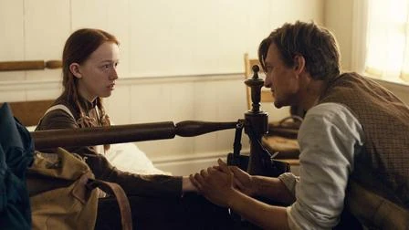
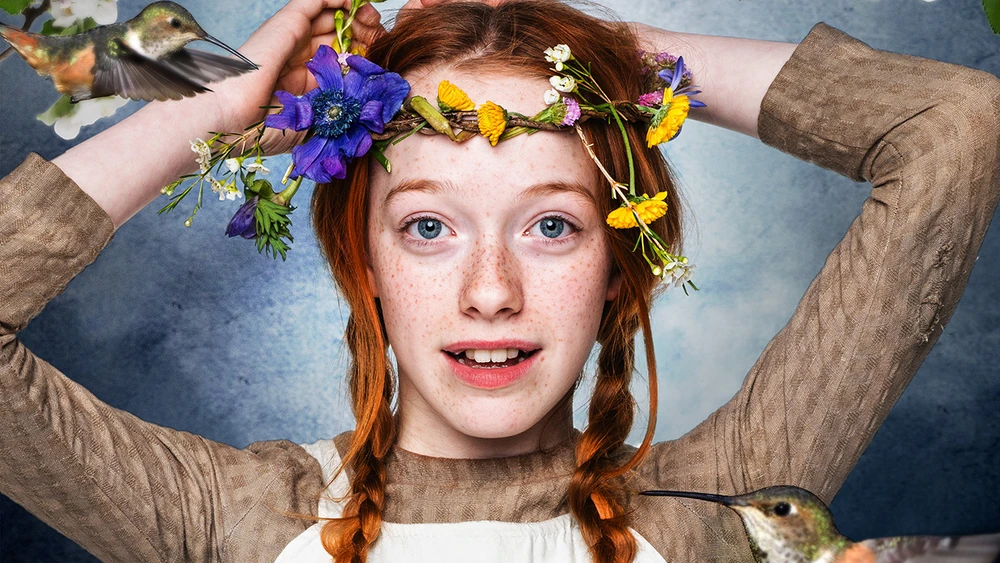

| Number | Image | Title | Writer | Director | Date of live stream |
| 1 |  | Youth is the Season of Hope | Moira Walley-Beckett | Helen Shaver | July 6th, 2018 |
| 2 |  | Signs are Small Measurable Things, but Interpretations are Illimitable | Shernold Edwards | Paul Fox | July 6th, 2018 |
| 3 | The True Seeing is Within | Kathryn Borel Jr. | Ken Girotti | July 6th, 2018 | |
| 4 | The Painful Eagerness of Unfed Hope | Jane Maggs | Anne Wheeler | July 6th, 2018 | |
| 5 | The Determining Acts of Her Life | Amanda Fahey | Norma Bailey | July 6th, 2018 | |
| 6 | I Protest Against Any Absolute Conclusion | Naledi Jackson | Ken Girotti | July 6th, 2018 | |
| 7 | Memory Has as Many Moods as The Temper | Jane Maggs | Anne Wheeler | July 6th, 2018 | |
| 8 | Struggling Against the Perception of Facts | Shernold Edwards | Amanda Tapping | July 6th, 2018 | |
| 9 | What We Have Been Makes Us What We Are | Moira Walley-Beckett | Paul Fox | July 6th, 2018 | |
| 10 | The Growing Good of the World | Moira Walley-Beckett | Paul Fox | July 6th, 2018 | |
| 총화 | 10 | ||||